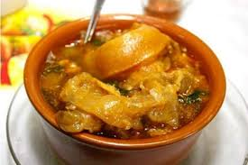

Em uma frigideira antiaderente acrescente a goma de mandioca de forma que cubra toda a superfície da frigideira.
Deixe por 3 minutos, e tire em seguida. Faça isso com toda a goma.
Frite as bananas cortadas ao meio na manteiga e reserve.
Nesta mesma frigideira, acrescente a água e o açúcar e deixe no fogo até o açúcar se dissolver.
Acrescente as bananas já fritas na calda e em seguida a canela e utilize para rechear as tapiocas.
Regue com a calda por cima das tapiocas.
Mugunzá Doces
Ingredientes
G2 xícaras de chá de milho amarelo para mugunzá
2 litros de água
500 ml de leite de gado
2 latas de leite condensado
200 g de leite de coco
100 g de coco ralado
Modo de Prepar
Deixe o milho de molho de um dia para o outro
Com a mesma agua do molho, leve-o ao fogo em panela de pressão por uns 40 minutos
apos o milho cozido acrescente o leite de gado
Coloque o leite condensado, o leite de coco e por ultimo o coco ralado, mexendo bem após cada ingrediente adicionado
Deixe em fogo baixo até que levante fervura
Se desejar polvilhe com canela em pó ou misture canela em pau junto com os outros ingredientes
Pode também usar o coco e o leite do mesmo fresco ou industrializado com os dois fica super saboroso
Cajú em Calda
Ingredientes
2 xícaras de açúcar
1/2 xícara de água
1/2 xícara do suco de cajú (reserve)
1 limão
Cravo a gosto
10 cajus maduros
Modo de Prepar
Retire a castanha dos caju
Corte uma fatia de 1 centímetro na parte inferiore.
Retire a casca das frutas e, com um garfo, faça furos em toda a fruta
Aperte - as, espremendo - as ligeiramente e reserve o suco
Coloque 1 litro de água em uma panela grande
Ferva em fogo alto por 10 minutos
Retire e escorra
Em uma panela média junte o açúcar, a água e o suco de caju reservado
Leve ao fogo alto, mexa até dissolvê - lo
Junte os cajus e cozinhe até ferver
Abaixe o fogo e cozinhe por 1 hora ou até que a calda esteja espessa e dourada

Mocotó de Boi
Ingredientes
1 pata de boi
1 limão
2 colheres (sopa) de vinagre
1 colher (sopa) de colorau
1 cravo-da-índia
3 dentes de alho
1 cebola tamanho médio
2 tomates tamanho médio sem peles e sementes
1 pimenta malagueta (opcional)
Modo de Prepar
A pata deve ser cortada em rodelas, bem lavada em água corrente
Leve para a panela de pressão, cubra com água e vinagre e deixe ferver
Após fervura, coloque fora a água e na mesma panela esprema o limão
Adicione sal, alho e cebola e deixe refogar um pouco
Em seguida acrescente o cravo, tomates, colorau, e água suficiente para cobrir (se desejar coloque 1 pimenta malagueta)
Ferva em fogo alto por 10 minutosTampe a panela de pressão e, ao começar a pressão, abaixe o fogo e deixe cozinhar
O ideal é vez por outra desligar o fogo esperar sair o ar, abrir para se preciso acrescentar mais água
Quando os ossos soltarem estará pronto, lembrando que deve ser cozido em fogo baixo, a quantidade de sal e sempre ao gosto
Finalize com salsa bem picada, bom apetite
Baião de Dois
Ingredientes
500g de feijão-de-corda seco
2 colheres (sopa) de óleoo
meia xícara (chá) de bacon picade
1 cebola ralada
2 dentes de alho amassados
meia colher (sopa) de coentro picado
2 envelopes de MAGGI® Tempero e Sabor Feijão
1 colher (chá) de sal
1 xícara (chá) de queijo coalho picado
Modo de Prepar
Em uma panela, cozinhe meio quilo de feijão de corda (deixado de molho na véspera) com 3 litros de água fria por cerca de 40 minuto
Em outra panela, aqueça o óleo e doure o bacon, a cebola e o alho. Acrescente o coentro e o arroz
Refogue bem e adicione o feijão cozido com o caldo, o MAGGI Tempero e Sabor e o salo
Tampe a panela e cozinhe, em fogo baixo, por cerca de 15 minutos ou até que o arroz fique cozido e úmido
Misture o queijo coalho picado e tampe a panela para que o vapor derreta o queijo. Sirv
Muqueca de Peixe
Ingredientes
1 kg de peixe cação em postas
1 pimentão verde em rodela
1 pimentão vermelho em rodelas
1 pimentão amarelo em rodelas
1 tomate em rodelas
1 cebola em rodelas
1 fio de azeite de oliva
molho shoyu
vinagre (ou limão)
açafrão
sal
pimenta-do-reino
1 maço de coentro
1 maço de cebolinha
1 tablete de caldo de peixe (ou camarão ou frango)
1 vidro pequeno que leite de coco (200 ml)
Modo de Prepar
Em uma panela (de preferência que seja de barro) coloque no fundo uma camada de cebola, tomate e pimentões coloridos.
Coloque as postas de peixe
Vamos temperar: um fio de azeite, um pouquinho de vinagre (ou limão), regue com molho shoyu, uma pitada de sal, uma pitada de açafrão; uma pitada de pimenta do reino (ou molho de pimenta)
Coloque na panela o tablete de caldo de peixe (camarão ou frango)
Coloque o restante das rodelas de cebola, tomate e pimentões
Lembre-se que o peixe pega tempero muito fácil e o que faz ficar gostoso é a suavidade no sabor, portanto coloque um pouquinho de cada ingrediente (sal, vinagre, azeite, shoyu, pimenta, açafrão)
O peixe vai soltar uma água, tampe a panela e deixe cozinha até ficar mole, cuidado para não cozinhar muito e desfazer as postas. Se necessário coloque um pouquinho de água filtrada
Quando o peixe estiver cozido, tempere com o coentro e a cebolinha e derrame o leite de coco (que nesta receita pode ser opcional)